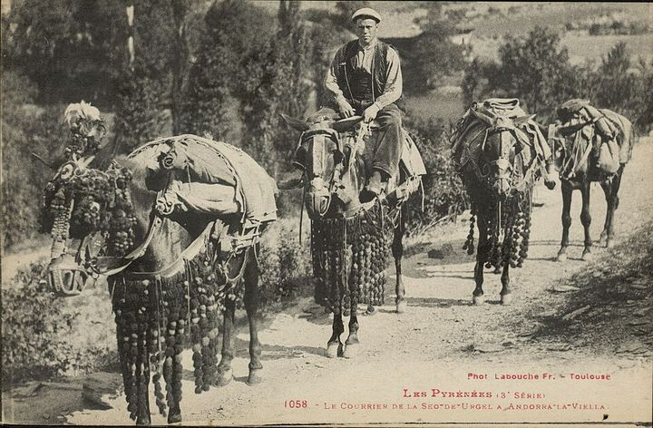
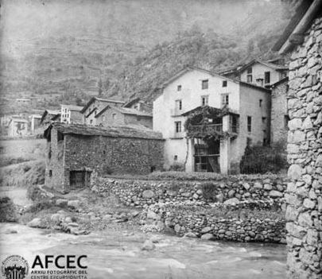
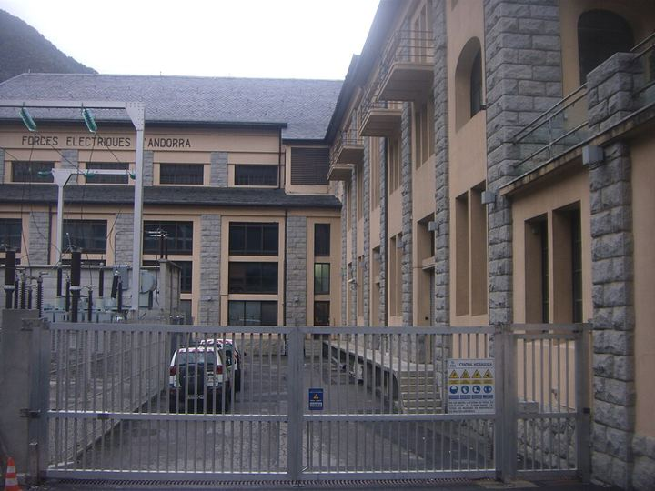

1929La concessió a FHASAContemporània
Carreteres a canvi de llum: el contracte que va obrir Andorra al segle XX
Context històric
A començament dels anys trenta Andorra continuava mal comunicada, amb una economia feble i una emigració constant. El 27 de març de 1929, el Consell General va signar el contracte que cedia els salts d'aigua del país als empresaris André Boussac i Lorenzo Gómez-Quintero. La concessió, de setanta-cinc anys, cobria tres salts (Escaldes, Sispony i Arcavell) i obligava la societat a construir carreteres que el país no podia finançar.
El 5 de març de 1930 es constituïa Forces Hidroelèctriques d'Andorra (FHASA), presidida per Miquel Mateu i Pla i amb deu milions de pessetes de capital. Les obres van atreure treballadors d'arreu, molts de l'Estat espanyol i de França. El 21 de març de 1931 va esclatar la primera vaga obrera moderna del país, i el 15 de maig es va crear el primer cos policial, amb cinc agents i un cap.
Alguns historiadors interpreten que FHASA va fer entrar al país corrents ideològics nous, com el sindicalisme, abans dels fets de 1933.
Dades, lectures i dubtes
- Dada
- Contracte del 27 de març de 1929, constitució de FHASA el 5 de març de 1930, vaga del 21 de març de 1931 i primer cos policial el 15 de maig del mateix any.
- Interpretació
- Que FHASA introduís el sindicalisme abans dels fets de 1933 és una lectura d'alguns historiadors.
- Qüestió oberta
- Quantes persones van treballar a les obres: mil segons Moles; més de dues mil segons altres fonts.
Multimèdia



Fonts
- Albert Moles i Betriu, «El patrimoni industrial, un valor turístic i una presència social», dins Patrimoni i turisme al Pirineu, Societat Andorrana de Ciències, 2015, pp. 123-125, DOI 10.2436/15.8060.04.13
- M. Jesús Lluelles i Larrosa i Eva Garcia i Lluelles, «Els reptes d'Andorra als segles XX-XXI», dins Recull de conferències 2019/20 · Debats de recerca 13, Societat Andorrana de Ciències (IEC), 2021, pp. 266-277 (concessió de 1929 i carreteres de 1929-1934, p. 266)
- historia.ad, «Món contemporani»
- El Periòdic d'Andorra, «De la vaga del 1933 a la llibertat sindical»
- Viquipèdia (anglès), «Escaldes Hydroelectric Power Station»
- Viquipèdia, «Revolució del 1933 (Andorra)»